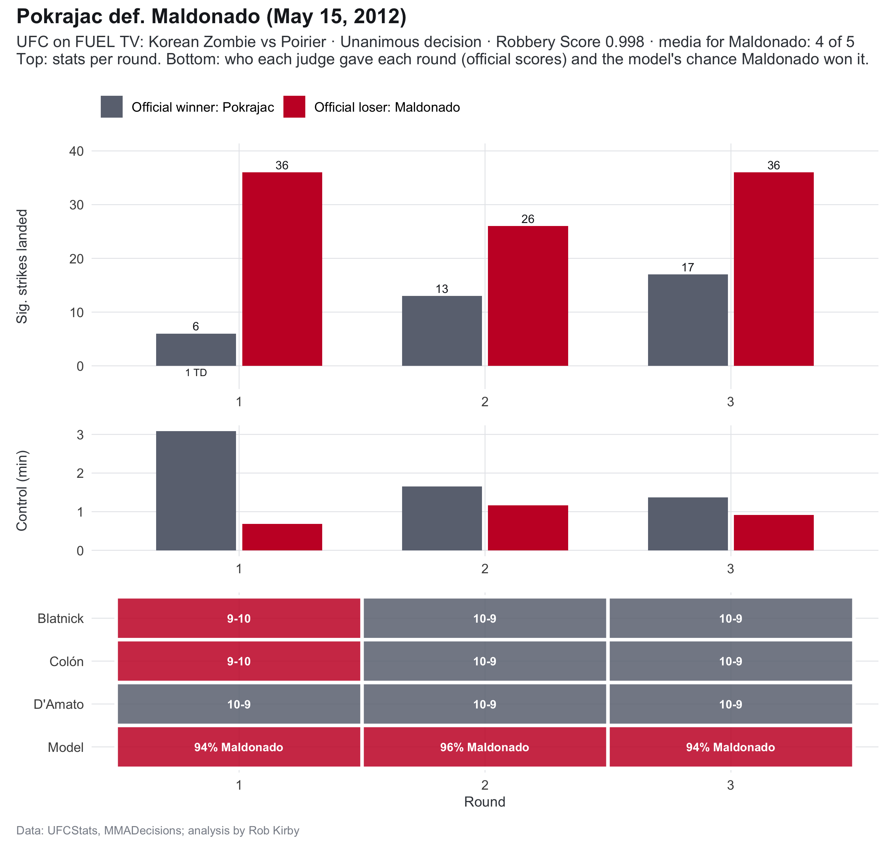
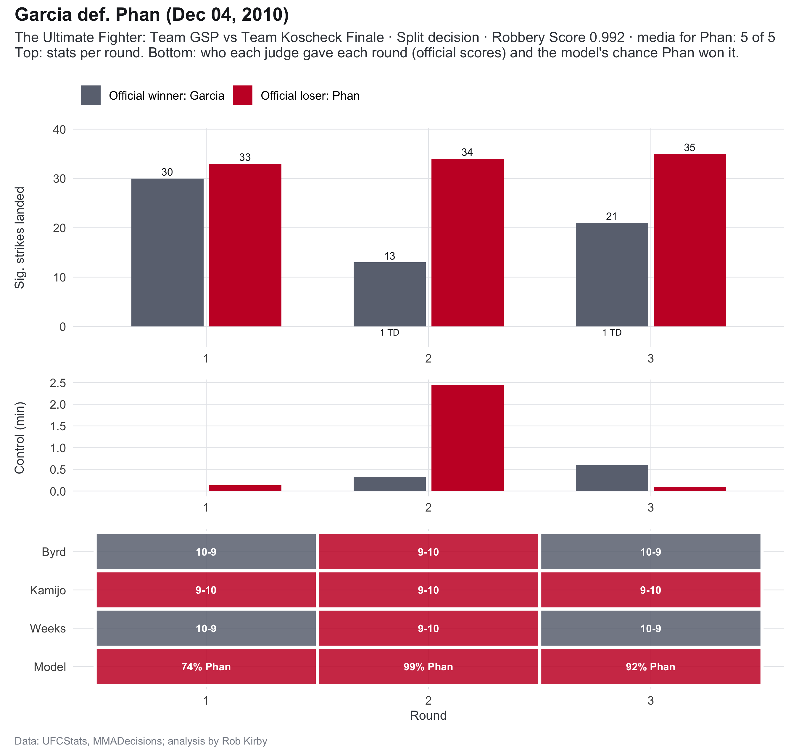
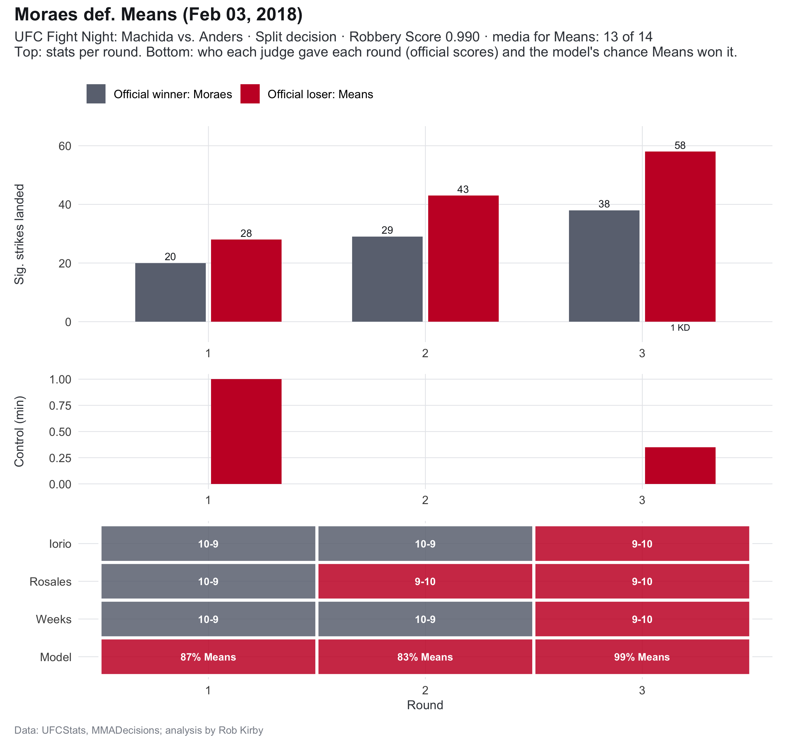
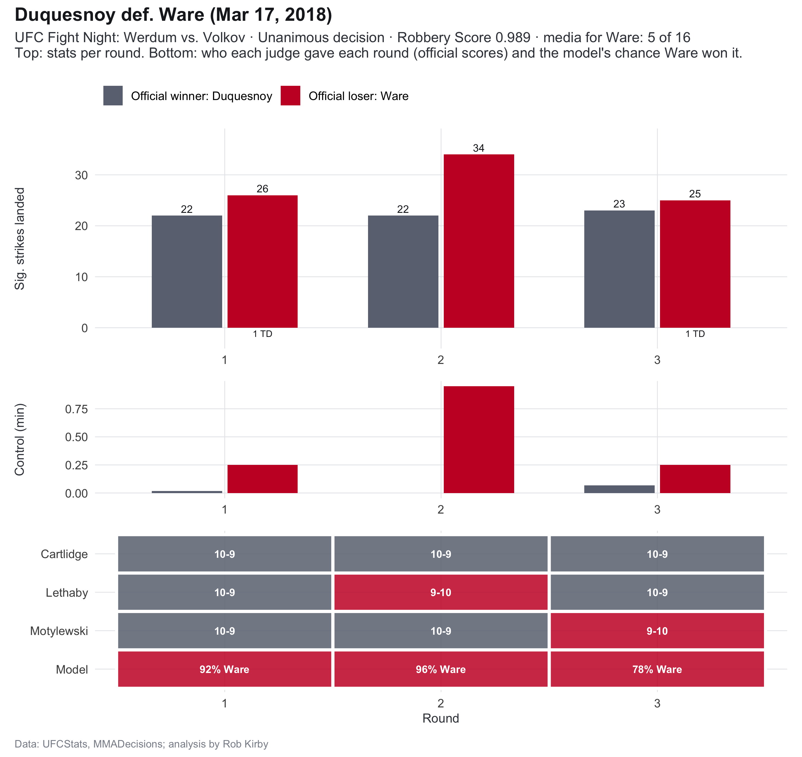
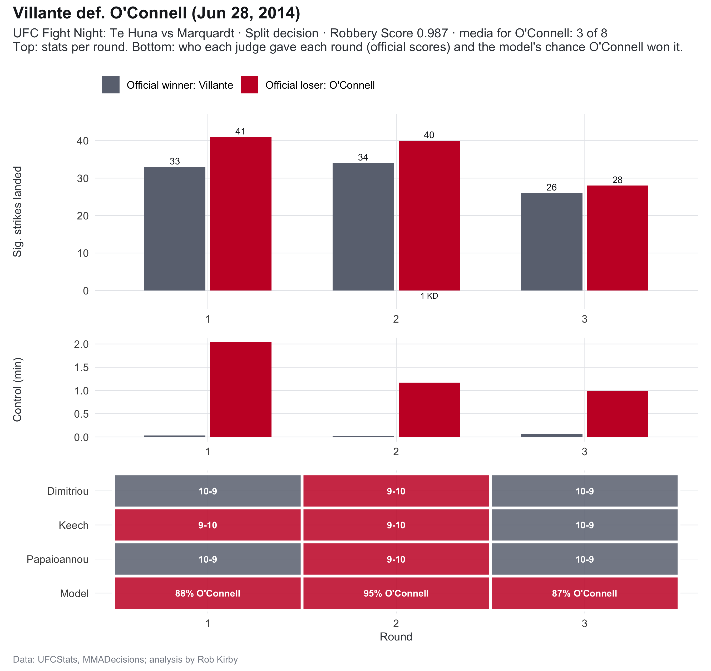
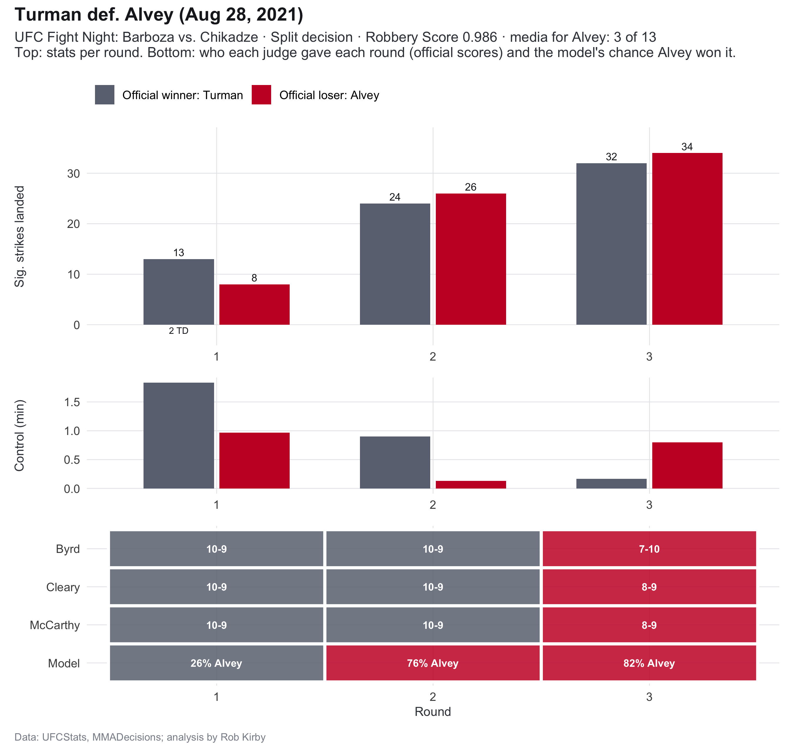
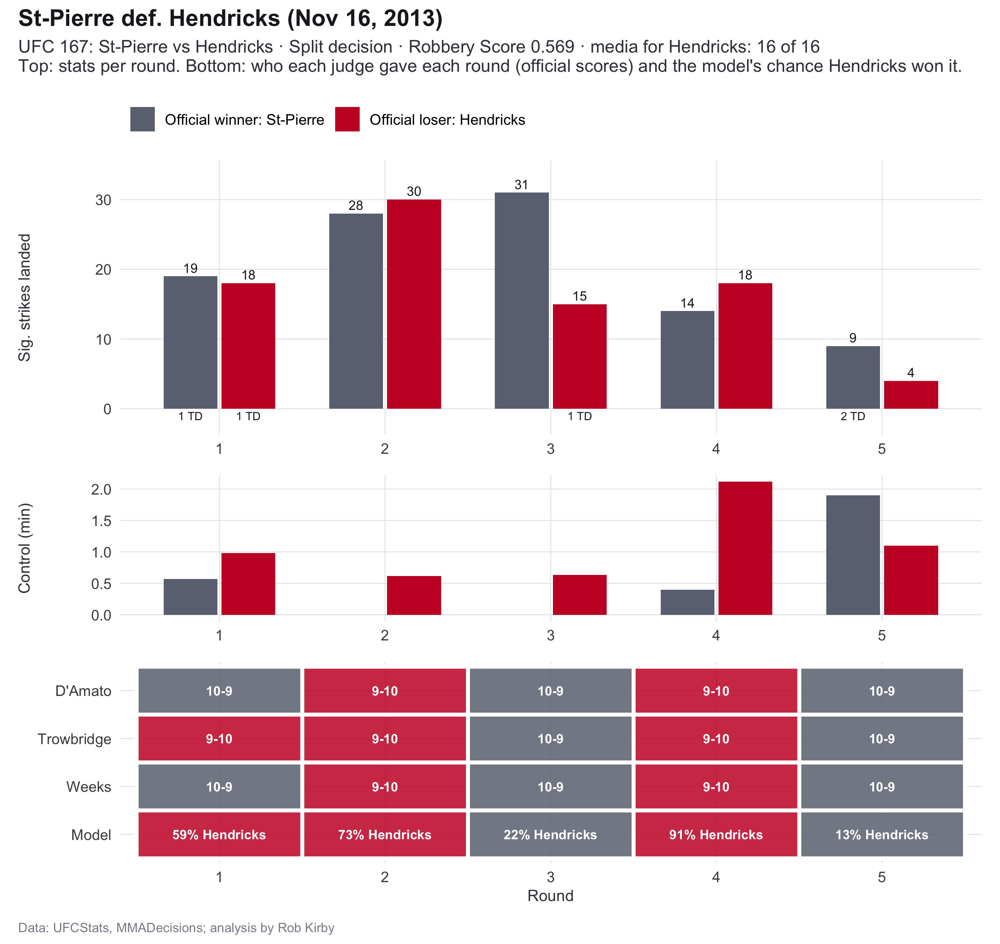
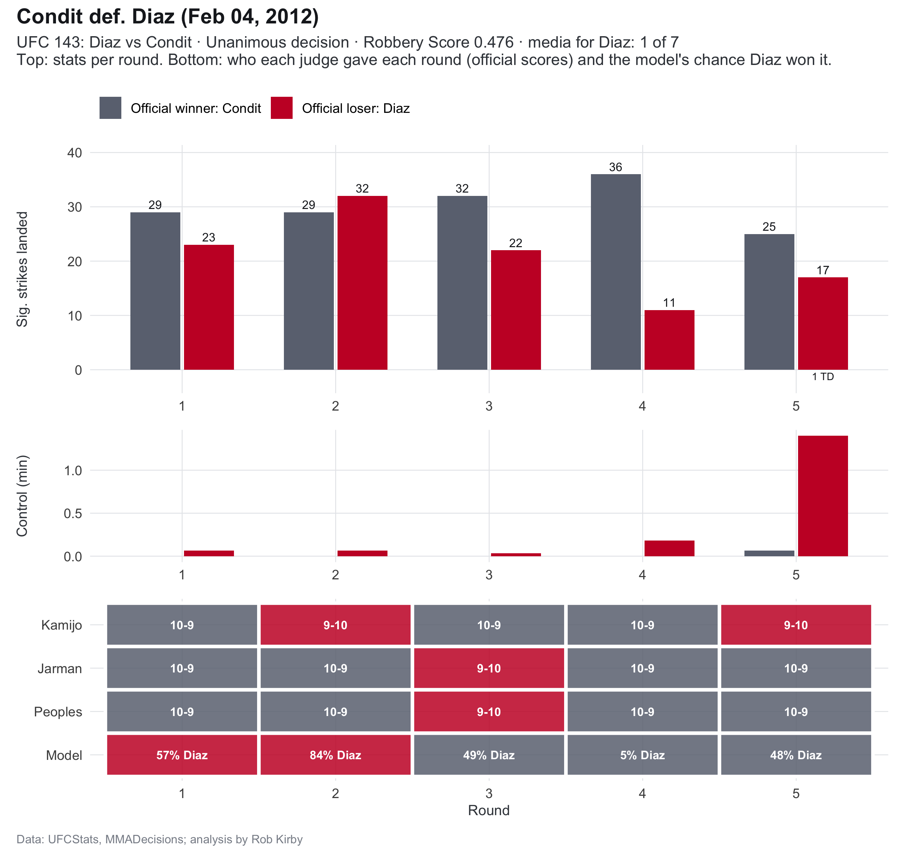
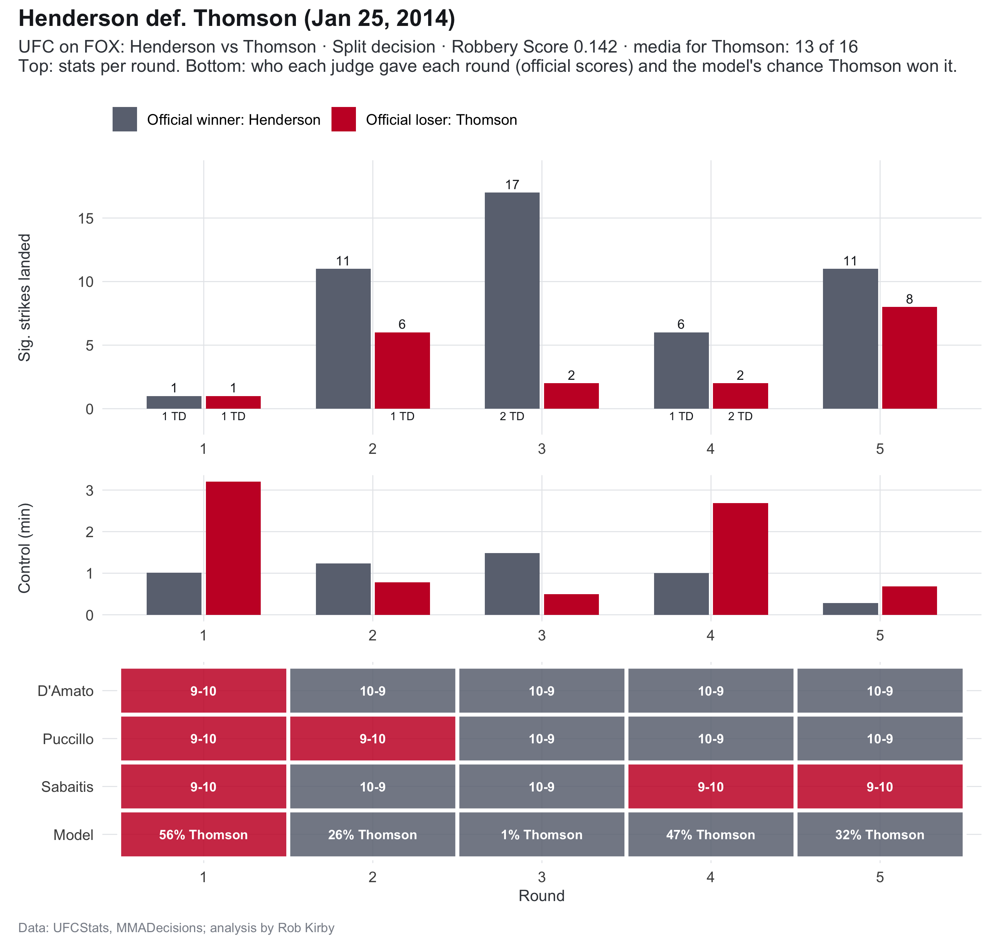
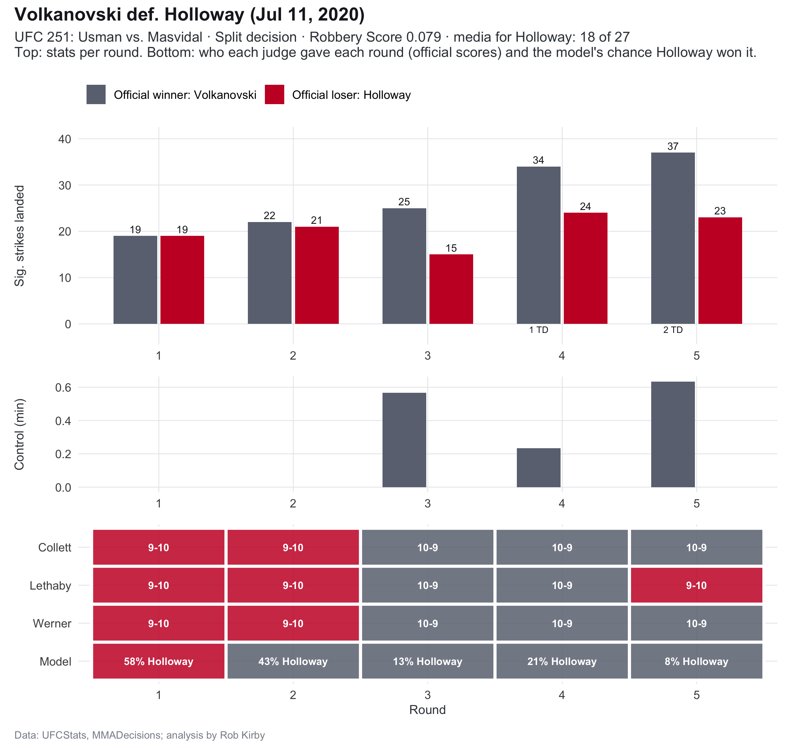

Show code
for (grp in levels(fights$group)) {
cat("\n\n## ", if (grp == "Top robbery") "Top robberies" else "Widely debated decisions", "\n\n", sep = "")
for (i in which(fights$group == grp)) {
x <- fights[i, ]
cat("\n\n### ", fight_label(x$winner_name, x$loser_name), " (", format(x$date, "%Y"), ")\n\n", sep = "")
media <- if (coalesce(x$media_scored, 0) > 0)
sprintf("%d of %d media scorecards had %s winning.", x$media_for_loser, x$media_scored, x$loser_name) else
"No media scorecards are recorded."
odds <- if (!is.na(x$mkt_p_winner)) sprintf(" Closing betting line: %s was %s (%s implied).",
x$winner_name, if (x$mkt_p_winner >= 0.5) "the favourite" else "the underdog",
pct(x$mkt_p_winner)) else ""
cat(sprintf("%s · %s decision · **Robbery Score %.3f** (%s) · P(%s wins) = %s, P(draw) = %s.\n\n",
x$event, x$decision_type, x$robbery_score, x$tier, x$loser_name, pct(x$p_loser), pct(x$p_draw, 0.1)))
cat(sprintf("Official cards (winner first): %s. %s%s\n\n", x$cards_winner_first, media, odds))
cat(x$why, "\n\n")
print(plot_fight_breakdown(x, filter(rounds, fight_url == x$fight_url), filter(judges, fight_url == x$fight_url)))
cat("\n\n")
}
}Top robberies
Igor Pokrajac def. Fabio Maldonado (2012)
UFC on FUEL TV: Korean Zombie vs Poirier · Unanimous decision · Robbery Score 0.998 (Robbery) · P(Fabio Maldonado wins) = 100%, P(draw) = 0.0%.
Official cards (winner first): Jeff Blatnick 29-28; Eric Colón 29-28; Sal D’Amato 30-27. 4 of 5 media scorecards had Fabio Maldonado winning. Closing betting line: Igor Pokrajac was the underdog (43% implied).
Model favored Maldonado in 3 of 3 rounds; Maldonado out-landed Pokrajac 98-36 in sig. strikes (ahead in 3 of 3); Pokrajac had 1 takedown to 0; Pokrajac had 3:20 more control time.

Leonard Garcia def. Nam Phan (2010)
The Ultimate Fighter: Team GSP vs Team Koscheck Finale · Split decision · Robbery Score 0.992 (Robbery) · P(Nam Phan wins) = 99%, P(draw) = 0.1%.
Official cards (winner first): Adalaide Byrd 29-28; Junichiro Kamijo 27-30; Tony Weeks 29-28. 5 of 5 media scorecards had Nam Phan winning. Closing betting line: Leonard Garcia was the favourite (63% implied).
Model favored Phan in 3 of 3 rounds; Phan out-landed Garcia 102-64 in sig. strikes (ahead in 3 of 3); Garcia had 2 takedowns to 0; Phan had 1:45 more control time.

Sergio Moraes def. Tim Means (2018)
UFC Fight Night: Machida vs. Anders · Split decision · Robbery Score 0.990 (Robbery) · P(Tim Means wins) = 99%, P(draw) = 0.1%.
Official cards (winner first): Phillipe Iorio 29-28; Marcos Rosales 28-29; Tony Weeks 29-28. 13 of 14 media scorecards had Tim Means winning. Closing betting line: Sergio Moraes was the underdog (36% implied).
Model favored Means in 3 of 3 rounds; Means out-landed Moraes 129-87 in sig. strikes (ahead in 3 of 3); Means scored 1 knockdown; Means had 1:21 more control time.

Tom Duquesnoy def. Terrion Ware (2018)
UFC Fight Night: Werdum vs. Volkov · Unanimous decision · Robbery Score 0.989 (Robbery) · P(Terrion Ware wins) = 99%, P(draw) = 0.0%.
Official cards (winner first): Ben Cartlidge 30-27; David Lethaby 29-28; Maciej Motylewski 29-28. 5 of 16 media scorecards had Terrion Ware winning. Closing betting line: Tom Duquesnoy was the favourite (78% implied).
Model favored Ware in 3 of 3 rounds; Ware out-landed Duquesnoy 85-67 in sig. strikes (ahead in 3 of 3); Ware had 1:22 more control time.

Gian Villante def. Sean O’Connell (2014)
UFC Fight Night: Te Huna vs Marquardt · Split decision · Robbery Score 0.987 (Robbery) · P(Sean O’Connell wins) = 99%, P(draw) = 0.0%.
Official cards (winner first): Anthony Dimitriou 29-28; Charlie Keech 28-29; Kon Papaioannou 29-28. 3 of 8 media scorecards had Sean O’Connell winning. Closing betting line: Gian Villante was the favourite (72% implied).
Model favored O’Connell in 3 of 3 rounds; O’Connell out-landed Villante 109-93 in sig. strikes (ahead in 3 of 3); O’Connell scored 1 knockdown; O’Connell had 4:04 more control time.

Wellington Turman def. Sam Alvey (2021)
UFC Fight Night: Barboza vs. Chikadze · Split decision · Robbery Score 0.986 (Robbery) · P(Sam Alvey wins) = 98%, P(draw) = 0.1%.
Official cards (winner first): Adalaide Byrd 27-28; Derek Cleary 28-27; Ron McCarthy 28-27. 3 of 13 media scorecards had Sam Alvey winning. Closing betting line: Wellington Turman was the favourite (52% implied).
Model favored Alvey in 2 of 3 rounds; Turman out-landed Alvey 69-68 in sig. strikes (ahead in 1 of 3); Turman had 2 takedowns to 0; Turman had 1:00 more control time; point deduction: Wellington Turman -2 (rd 3).

Widely debated decisions
Georges St-Pierre def. Johny Hendricks (2013)
UFC 167: St-Pierre vs Hendricks · Split decision · Robbery Score 0.569 (Questionable) · P(Johny Hendricks wins) = 56%, P(draw) = 1.0%.
Official cards (winner first): Sal D’Amato 48-47; Glenn Trowbridge 47-48; Tony Weeks 48-47. 16 of 16 media scorecards had Johny Hendricks winning. Closing betting line: Georges St-Pierre was the favourite (65% implied).
Model favored Hendricks in 3 of 5 rounds; St-Pierre out-landed Hendricks 101-85 in sig. strikes (ahead in 3 of 5); St-Pierre had 3 takedowns to 2; Hendricks had 2:35 more control time.

Carlos Condit def. Nick Diaz (2012)
UFC 143: Diaz vs Condit · Unanimous decision · Robbery Score 0.476 (Close / defensible) · P(Nick Diaz wins) = 46%, P(draw) = 1.3%.
Official cards (winner first): Junichiro Kamijo 48-47; Patricia Morse Jarman 49-46; Cecil Peoples 49-46. 1 of 7 media scorecards had Nick Diaz winning. Closing betting line: Carlos Condit was the underdog (36% implied).
Model favored Diaz in 2 of 5 rounds; Condit out-landed Diaz 151-105 in sig. strikes (ahead in 4 of 5); Diaz had 1:41 more control time.

Benson Henderson def. Josh Thomson (2014)
UFC on FOX: Henderson vs Thomson · Split decision · Robbery Score 0.142 (Clean) · P(Josh Thomson wins) = 14%, P(draw) = 0.5%.
Official cards (winner first): Sal D’Amato 49-46; Brian Puccillo 48-47; Gabriel Sabaitis 47-48. 13 of 16 media scorecards had Josh Thomson winning. Closing betting line: Benson Henderson was the favourite (74% implied).
Model favored Thomson in 1 of 5 rounds; Henderson out-landed Thomson 46-19 in sig. strikes (ahead in 5 of 5); Henderson landed more head strikes (16-5); Thomson had 2:50 more control time.

Alexander Volkanovski def. Max Holloway (2020)
UFC 251: Usman vs. Masvidal · Split decision · Robbery Score 0.079 (Clean) · P(Max Holloway wins) = 8%, P(draw) = 0.3%.
Official cards (winner first): Mark Collett 48-47; David Lethaby 47-48; Clemens Werner 48-47. 18 of 27 media scorecards had Max Holloway winning. Closing betting line: Alexander Volkanovski was the favourite (65% implied).
Model favored Holloway in 1 of 5 rounds; Volkanovski out-landed Holloway 137-102 in sig. strikes (ahead in 5 of 5); Volkanovski landed more head strikes (64-44); Volkanovski had 3 takedowns to 0; Volkanovski had 1:26 more control time.
